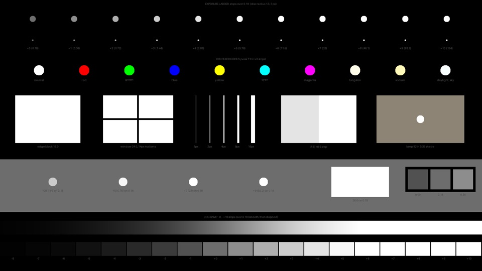

Head to head
Wipe any two.
Pick a look for each side and drag across the frame. OpenDRT is in there as a plain base line, so you can see what each tool adds.
Drag, or tab to the frame and use the arrow keys.
Film emulation tools on the same frames, each set to 250D printed to 2383 where the tool has it. No grading on top. Pick a scene, wipe any two, open any frame at full res.
Pick a scene · click any frame for full res, arrow keys step through the looks
Head to head
Pick a look for each side and drag across the frame. OpenDRT is in there as a plain base line, so you can see what each tool adds.
Drag, or tab to the frame and use the arrow keys.
Grain and halation test
Each tool's 16 mm grain and halation on a synthetic test chart: an exposure ladder, coloured sources, hard edges, thin lines and a log ramp. Click any frame for the full 4K grab. OpenDRT is the clean base line.

Free download
The same synthetic chart used above, so you can run your own tools through it. Every source is a known scene linear value over 0.18 grey.
Render speed
Benchmarked at 4K in DaVinci Resolve on a 60 fps timeline, on a Mac Studio M4 Max with 128 GB of RAM, so nothing is capped at 24. Headroom and spare time are measured against a 24 fps deadline of 41.7 ms per frame.
| Tool | FPS | ms / frame | Headroom | Spare ms at 24 | Render 1 hr of footage (est.) | Speed against 60 fps |
|---|
Bars run to 60 fps, the dashed line is 24. Blue holds 24 fps in real time, red can't. Render times for an hour of footage are estimates worked out from the fps. OpenDRT on its own is the base line, with no grain or halation.
How they were made
Every look in a scene starts from the same source frame in DaVinci Resolve. Each tool is set to 250D negative printed to 2383 where it offers that pairing, and otherwise left on its defaults. Nothing is graded on top, so what you see is the tool.
Stills are 4K PNG grabs from Resolve. The page shows a light preview and the viewer loads a high quality JPEG of each grab, 2560 wide for the scenes and full 4K for the grain chart.
The grain and halation chart uses each tool's 16 mm setting. Render speeds were benchmarked at 4K in Resolve on a 60 fps timeline, on a Mac Studio M4 Max with 128 GB of RAM, with grain and halation on.
Third party product names belong to their owners and are used here only to identify the tools being compared.
The premium tools
PhotoChemist and GD DRT Pro come with the whole Tool Box. Become a Happy Little Noder and unlock every premium tool on the channel, plus every update and new release. Your price locks in the day you join and stays locked, even if you take a year or two off. We may raise it for new members later, but never for you.
Everything you see on YouTube, plus every update.
A whole set of the Tool Box is free, always, OpenDRT included. Grab the Tool Box Manager and start playing today. PhotoChemist, GD DRT Pro and the rest of the premium kit unlock with a single purchase whenever you're ready.